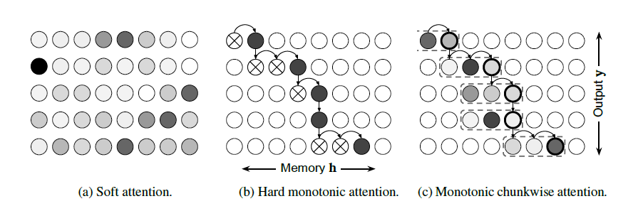
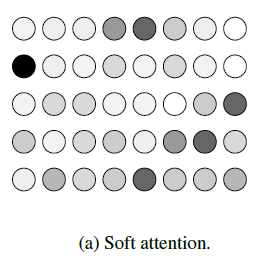
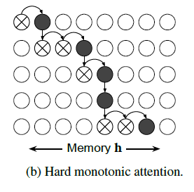
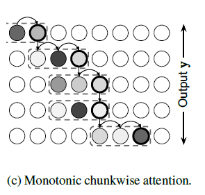
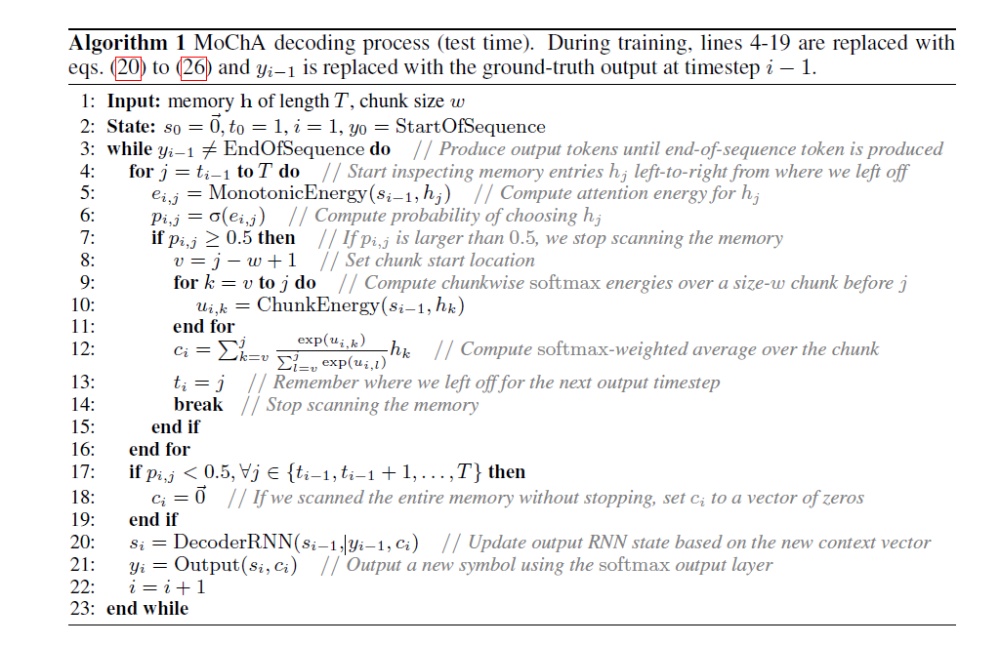
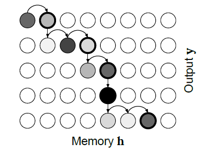

MoChA

ICLR 2018 的一篇论文
作者认为传统的 Soft-Attention 存在着计算复杂度和输入输出序列长度T,U
乘积正相关，复杂度为O（TU），因此不适合长序列计算，且在计算attention过程中由于需要等待输入完成才可以开始计算，因此无法做到实时解码。Raffel
等在2017年指出当输入序列和输出序列直接不需要重排的时候可以简化运算如图(b)，但是其使用的Hard
monotonic attention太强硬限制了性能，因此提出了改进版本Monotonic
chunkwise attention (MoChA)。
对于序列到序列模型，假设输入是\(x=\{x_1,\dots,x_T\}\) ，输出是\(y=\{y_1,\dots,y_U\}\) ，一般来说输入会被编码器转换为隐藏序列\(h=\{h_1,\dots,h_T\}\) \[
h_j=EncoderRNN(x_j,h_{j-1}) \tag{1}
\] 然后解码器自己迭代计算隐藏向量和输出，这其中\(s_i\) 是解码器隐藏状态，\(c_i\) 是上下文向量，\(y_i\) 是输出结果，需要注意的是\(c_i\) 是解码器和编码器沟通的唯一通道 \[
s_i=DecoderRNN(y_{i-1},s_{i-1},c_i) \tag{2}
\]
\[
y_i=Output(s_i,c_i) \tag{3}
\]
1.标准注意力机制

image-20210917103001959
首先在解码器步骤，根据\(s_{i-1}\) 为每个编码器隐藏状态\(h_j\) 计算能量值\(e_{i,j}\) \[
e_{i,j}=Energy(h_j,s_{i-1}) \tag{4}
\] 这里的\(Energy(\cdot)\) 有很多选择，一种常见的是，其中\(W_h,W_s,b,v\) 是可以学习的参数 \[
Energy(h_j,s_{i-1}):=v^Ttanh(W_hh_j+W_ss_{i-1}+b) \tag{5}
\] 之后对\(e_{i,j}\) 使用\(softmax\) 便可以得到权重值 \[
\alpha_{i,j}=\frac{exp(e_{i,j})}{\sum_{k=1}^{T}exp(e_{i,k})}=softmax(e_{i,:})j
\tag{5}
\] 最后利用\(\alpha_{i,j}\) 对\(h_j\) 进行加权，便可以得到上下文向量\(c_i\) \[
c_i=\sum_{j=1}^{T}\alpha_{i,j}h_j \tag{6}
\]
2.硬单调注意力机制

image-20210917103024193
硬单调注意力机制，在每个解码时间步\(i\) ，注意力机制会从上一个时间步所关注的注意力索引，记为\(t_{i-1}\) ，开始向后搜索，对于\(j=t_{i-1},
t_{i-1}+1,\dots\) 计算每一步的\(e_{i,j}\) ，随后利用\(\sigma(\cdot)\) 将其转换为选择概率\(p_{i,j}\) ，经过随机伯努利采样，得到最后的离散结果\(z_{i,j}\) \[
\begin{gather}
e_{i,j} = MonotonicEnergy(s_{i-1},h_j) \tag{7}
\\p_{i,j} = \sigma(e_{i,j}) \tag{8}
\\z_{i,j} \backsim Bernoulli(p_{i,j}) \tag{9}
\end{gather}
\]
一旦出现\(z_{i,j}\) 等于1，模型将会停止，并设置\(t_i=j，c_i=h_t\) ，其复杂度是\(O(max(T,U))\) ，同时还可以被用于实时解码
但是由于上述过程涉及到了采样，其无法利用反向传播，因此在训练过程需要改为对\(c_i\) 的期望值进行训练，其被改为如下形式
\[
\begin{gather}
\alpha_{i,j}=p_{i,j}
\left((1-p_{i,j-1})\frac{\alpha_{i,j-1}}{p_{i,j-1}}+\alpha_{i-1,j}
\right) \tag{10}
\\
c_i=\sum_{j=1}^{T}\alpha_{i,j}h_j \tag{11}
\end{gather}
\] 这里主要对第一个公式进行解释，我们定义\(\alpha_{1,j}\) 表示第\(j\) 个被选中而第\(1,2,\dots,j-1\) 没被选中的概率，则 \[
\alpha_{1,j}=p_{1,j}\prod_{k=1}^{j-1}(1-p_{1,k}) \tag{12}
\] 当\(i>0\) 时，对于\(\alpha_{i,j}\) 来说，为了在第\(i\) 个时间步选中第\(j\) 个编码器步骤，除了满足\(c_i=h_j\) 以外，还需要满足\(c_{i-1}=h_{k},
k\in\{1,\dots,j\}\) （单调注意力机制）则 \[
\alpha_{i,j}=p_{i,j}\sum_{k=1}^{j}\left(\alpha_{i-1,k}
\prod_{l=k}^{j-1}(1-p_{i,l}) \right) \tag{13}
\] 这里\(\alpha_{i-1,k}\) 描述的是第\(i-1\) 个时间步选择\(k\) 的概率，其乘以在第\(i\) 个时间步不选择\((k,k+1,\dots,j-1)\) 的概率\(\prod_{l=k}^{j-1}(1-p_{i,l}\) )
这里我们为了方便，定义\(\prod_{n}^mx=1,n>m\) ，这里式（12）也可以用（13）来表示，只不过需要定义
\[
\alpha_{0,j}=\begin{cases}
0, \,\,j=1
\\1, \,\,j\in\{2,\dots,T\} \tag{14}
\end{cases}
\] 接下来将从公式（13）推到出公式（10）的形式
由公式（13），先分离出\(a_{i-i,j}\) ，再从连乘中分离出\((1-p_{i,j-1})\) ，就得到了公式（10）的形式
\[
\begin{align}
\alpha_{i,j} &= p_{i,j} \left( \sum_{k=1}^{j-1} \left(
\alpha_{i-1,k} \prod_{l=k}^{j-1}(1-p_{i,l})\right) + \alpha_{i-1,j}
\right)
\\ &= p_{i,j}\left( (1-p_{i,j-1}) \sum_{k=1}^{j-1}
\left(\alpha_{i-1,k} \prod_{l=k}^{j-2}(1-p_{i,l})\right) +
\alpha_{i-1,j} \right)
\\ &= p_{i,j}
\left((1-p_{i,j-1})\frac{\alpha_{i,j-1}}{p_{i,j-1}}+\alpha_{i-1,j}
\right)
\end{align}
\] 对于公式（10）也可以这么理解，\(\alpha_{i,j-1}\) 表示第i步选择\(j-1\) 项的概率，但是为了修正实际没选的事实，需要乘以\((1-p_{i,j-1})/p_{i,j-1}\) 进行修正，再加上\(\alpha_{i-1,j}\) 表征上一步选择\(j\) 的概率，最后乘以\(p_{i,j}\) 强制选择\(j\)
对于公式（10）来说\(\alpha_{i,j}\) 的计算依赖于\(\alpha_{i-1,j}\) ，\(\alpha_{i,j-1}\) ，而对于\(\alpha_{i,j-1}\) 的依赖则意味着需要计算\(\alpha_{i,1},\alpha_{i,2},\dots,\alpha_{i,T}\) ，然而可以通过一些方法将其计算化简
定义\(q_{i,j}=\alpha_{i,j}/p_{i,j}\) ，则由公式（10）可得
\[
\begin{align}
q_{i,j} &= (1-p_{i,j-1})q_{i,j-1}+\alpha_{i-1,j} \tag{15}
\cr q_{i,j}-(1-p_{i,j-1})q_{i,j-1} &= \alpha_{i-1,j} \tag{16}
\cr \frac{q_{i,j}}{\prod_{k=1}^{j}(1-p_{i,k-1})} -
\frac{(1-p_{i,j-1})q_{i,j-1}}{\prod_{k=1}^{j}(1-p_{i,k-1})}
&= \frac{ \alpha_{i-1,j}}{\prod_{k=1}^{j}(1-p_{i,k-1})} \tag{17}
\cr \frac{q_{i,j}}{\prod_{k=1}^{j}(1-p_{i,k-1})} -
\frac{q_{i,j-1}}{\prod_{k=1}^{j-1}(1-p_{i,k-1})} &= \frac{
\alpha_{i-1,j}}{\prod_{k=1}^{j}(1-p_{i,k-1})} \tag{18}
\cr \sum_{l=1}^{j}\left( \frac{q_{i,l}}{\prod_{k=1}^{l}(1-p_{i,k-1})} -
\frac{q_{i,l-1}}{\prod_{k=1}^{l-1}(1-p_{i,k-1})}\right) &=
\sum_{l=1}^{j} \frac{ \alpha_{i-1,l}}{\prod_{k=1}^{l}(1-p_{i,k-1})}
\tag{19}
\cr \frac{q_{i,j}}{\prod_{k=1}^{j}(1-p_{i,k-1})}-q_{i,0} &=
\sum_{l=1}^{j} \frac{ \alpha_{i-1,l}}{\prod_{k=1}^{l}(1-p_{i,k-1})}
\tag{20}
\cr q_{i,j} &= \left(\prod_{k=1}^{j}(1-p_{i,k-1})\right) \left(
\sum_{l=1}^{j} \frac{ \alpha_{i-1,l}}{\prod_{k=1}^{l}(1-p_{i,k-1})}
\right) \tag{21}
\cr q_i &=
cumprod(1-p_i)cumsum(\frac{\alpha_{i-1}}{cumprod(1-p_i)}) \tag{22}
\end{align}
\] 其中\(cumprod(x)\) 和\(cumsum(x)\) 的定义如下：
\[
cumprod(x) = [1,x_1,x_1x_2,\dots,\prod_{i}^{|x|-1}x_i]
\]
\[
cumsum(x) = [x_1,x_1+x_2,\dots,\sum_{i}^{|x|}x_i]
\]
同时作者指出，在一些任务上使用原来的\(Energy(\cdot)\) 函数可能面临无法收敛，此时可以改为
\[
MonotonicEnergy(s_{i-1},h_j) =
g\frac{v^T}{||v||}tanh(W_ss_{i-1}+W_hh_j)+r \tag{23}
\]
3.单调块注意力机制（Monotonic
Chunkwise Attention， MoChA）

image-20210918092836079
上一节中的硬单调注意力机制，有两个重要的限制：1.每次只注意一个编码器结果
2.输入输出对齐式严格单调的。作者认为由于这两个的限制导致了硬单调注意力机制在大部分任务上不如传统注意力机制，因此提出了修改模型MoChA
在test阶段，其和硬单调注意力机制基本一致，只是在计算\(c_i\) 的时候，改为了计算包括\(t_i\) 在内共\(w\) 长度的普通注意力机制，即在小范围内实现软注意力机制
\[
\begin{align}
v &= t_i-w+1 \tag{24}
\\ u_{i,k} &=
ChunkEnergy(s_{i-1,h_k}),k\in\{v,v+1,\dots,t_i\} \tag{25}
\\ c_i &=
\sum_{k=v}^{t_i}\frac{exp(u_{i,k})}{\sum_{l=v}^{t_i}exp(u_i,l)}h_k \tag{26}
\end{align}
\]
其中公式（25）的能量函数与公式（5）类似，和公式（23）的不同
这里作者给出了在test阶段的伪代码

image-20210918095038044
在训练阶段仿照第二部分的方法，计算\(c_i\) 的期望值分布，这里记为\(\beta_{i,j}\) ，其中外层的求和考虑了包含\(j\) 位置的所有可能情况的\(\alpha\) \[
\beta_{i,j}=\sum_{k=j}^{j+w-1}\left(\frac{\alpha_{i,k}exp(u_{i,j})}{\sum_{l=k-w+1}^{k}exp(u_{i,l})}\right)
\tag{27}
\] 在这里引入\(MovingSum(\cdot)\) \[
MovingSum(x,b,f)_n:=\sum_{m=n-(b-1)}^{n+f-1}x_m
\] 则式（27）可以改写为： \[
\beta_{i,:}=exp(u_{i,:})MovingSum\left(\frac{\alpha_{i,:}}{MovingSum(exp(u_{i,:}),w,1)},1,w\right)
\tag{28}
\] 最后给出在训练期间MoChA的全部公式 \[
\begin{align}
e_{i,j} &= MonotonicEnergy(s_{i-1},h_j) \tag{29}
\\ \epsilon &\backsim \mathcal{N}(0,1) \tag{30}
\\ p_{i,j} &= \sigma(e_{i,j}+\epsilon) \tag{31}
\\ \alpha_{i,:} &=
p_{i,:}cumprod(1-p_{i,:})cumsum(\frac{\alpha_{i-1,:}}{cumprod(1-p_{i,:})})
\tag{32}
\\ u_{i,j} &= ChunkEnergy(s_{i-1,h_j}) \tag{33}
\\ \beta_{i,:} &=
exp(u_{i,:})MovingSum\left(\frac{\alpha_{i,:}}{MovingSum(exp(u_{i,:}),w,1)},1,w\right)
\tag{34}
\\ c_i &=\sum_{j=1}^{T}\beta_{i,j}h_j \tag{35}
\end{align}
\]
4.单调自适应分块注意力机制
(Monotonic Adaptive Chunkwise Attention, MAtChA)

image-20210918110215791
作者在附录给出了自适应分块的推导，理论上其可以自适应的选择块的大小，但按照作者所描述的，该方法并没有表现的更好
在test阶段，其和MoChA十分相似，但是在计算\(c_i\) 的时候，其中的\(v\) 被替换为\(t_{i-1}\) 即计算一般注意力的范围从上一时间步关注的点到当前步为止
\[
c_i=\sum_{k=t_{i-1}}^{t_i}\frac{exp(u_{i,k})}{\sum_{l=t_{i-1}}^{t_i}exp(u_i,l)}h_k
\tag{36}
\] 在训练阶段则开始有点复杂了
首先给出\(\beta_{i,j}\) 的表达式
\[
\beta_{i,j} =
\sum_{k=1}^{j}\sum_{l=j}^{T}\left(\frac{exp(u_{i,j})}{\sum_{m=k}^{l}exp(u_{i,m})}\alpha_{i-1,k}p_{i,l}\prod_{n=k}^{l-1}(1-p_{i,n})\right)
\tag{37}
\] 这个表达式是这样理解的，首先对于第\(i\) 时间步的第\(j\) 个位置来说，其上一时间步的位置对当前位置是有影响的，因此需要将所有可能性相加，即\(\sum_{k=1}^{j}\) ，而对于每一个\(k\) 当前时间步的位置从\(j\) 开始到\(T\) 也是都有可能，因此也需要相加即\(\sum_{l=j}^{T}\) ，在括号内第一部分\(\frac{exp(u_{i,j})}{\sum_{m=k}^{l}exp(u_{i,m})}\) 则是对\(k\) 到\(l\) 区间的软注意力计算，之后乘以上一时间步选择\(k\) 位置的概率\(\alpha_{i-1,k}\) ，接下来再乘以连续不选\(k,k+1,\dots,l-1\) 的概率和选择\(l\) 的概率\(p_{i,l}\prod_{n=k}^{l-1}(1-p_{i,n})\)
公式（37）需要进行嵌套计算，在这里给出一个可以并行计算的方法 \[
\begin{align}
\beta_{i,j} &=
\sum_{k=1}^{j}\sum_{l=j}^{T}\left(\frac{exp(u_{i,j})}{\sum_{m=k}^{l}exp(u_{i,m})}\alpha_{i-1,k}p_{i,l}\prod_{n=k}^{l-1}(1-p_{i,n})\right)
\tag{38}
\\ &=
exp(u_{i,j})\sum_{k=1}^{j}\sum_{l=j}^{T}\left(\frac{\alpha_{i-1,k}}{\sum_{m=k}^{l}exp(u_{i,m})}p_{i,l}\prod_{n=k}^{l-1}(1-p_{i,n})\right)
\tag{39}
\\ &=
exp(u_{i,j})\sum_{l=j}^{T}\sum_{k=1}^{j}\left(\frac{\alpha_{i-1,k}}{\sum_{m=k}^{l}exp(u_{i,m})}p_{i,l}\prod_{n=k}^{l-1}(1-p_{i,n})\right)
\tag{40}
\\ &=
exp(u_{i,j})\sum_{l=j}^{T}p_{i,l}\sum_{k=1}^{j}\left(\frac{\alpha_{i-1,k}}{\sum_{m=k}^{l}exp(u_{i,m})}\prod_{n=k}^{l-1}(1-p_{i,n})\right)
\tag{41}
\\ &=
exp(u_{i,j})\sum_{l=j}^{T}p_{i,l}\sum_{k=1}^{j}\left(\frac{\alpha_{i-1,k}}{\sum_{m=k}^{l}exp(u_{i,m})}\prod_{n=k}^{j-1}(1-p_{i,n})
\prod_{o=j}^{l-1}(1-p_{i,o}) \right) \tag{42}
\\ &= exp(u_{i,j})\sum_{l=j}^{T} p_{i,l}
\prod_{o=j}^{l-1}(1-p_{i,o}) \sum_{k=1}^{j}
\left(\frac{\alpha_{i-1,k}}{\sum_{m=k}^{l}exp(u_{i,m})}\prod_{n=k}^{j-1}(1-p_{i,n})
\right) \tag{43}
\end{align}
\]
\[
\begin{align}
r_{i,j,l} &= \sum_{k=1}^{j}
\left(\frac{\alpha_{i-1,k}}{\sum_{m=k}^{l}exp(u_{i,m})}\prod_{n=k}^{j-1}(1-p_{i,n})
\right) \tag{44}
\\ &= \sum_{k=1}^{j-1}
\left(\frac{\alpha_{i-1,k}}{\sum_{m=k}^{l}exp(u_{i,m})}\prod_{n=k}^{j-1}(1-p_{i,n})
\right) + \frac{\alpha_{i-1,j}}{\sum_{m=j}^{l}exp(u_{i,m})} \tag{45}
\\ &= (1-p_{i,j-1})\sum_{k=1}^{j-1}
\left(\frac{\alpha_{i-1,k}}{\sum_{m=k}^{l}exp(u_{i,m})}\prod_{n=k}^{j-2}(1-p_{i,n})
\right) + \frac{\alpha_{i-1,j}}{\sum_{m=j}^{l}exp(u_{i,m})} \tag{46}
\\ &= (1-p_{i,j-1})r_{i,j-1,l} +
\frac{\alpha_{i-1,j}}{\sum_{m=j}^{l}exp(u_{i,m})} \tag{47}
\end{align}
\] 通过式（44）将（43）重写为 \[
\beta_{i,j} = exp(u_{i,j})\sum_{l=j}^{T} p_{i,l}
\prod_{o=j}^{l-1}(1-p_{i,o}) r_{i,j,l} \tag{48}
\] 经过观察式（47）与式（15）很像，根据式（15-22）可以推导出
\[
r_{i,:,:} = cumprod(1-p_{i,:})cumsum\left(
\frac{\alpha_{i-1,:}}{AllPartialSums(exp(u_{i,:})cumprod(1-p_{i,:}))}
\right) \tag{49}
\] 其中 \[
AllPartialSums(x)_{j,l}= \begin{cases}
\sum_{m=j}^{l} x_m, \, \, j \leq l
\\ 1, \, \, j>l
\end{cases}
\]
则 \[
\beta_{i,:}=exp(u_i,:)\sum_{t=j}^{T}p_{i,:}AllPartialSums(1-p_{i,:})_{:,l}
\cdot r_{i,:,l}
\]
根据作者所描述，该方法目前相比MoChA没有提升，计算复杂度却大大上升
参考文献
[1] CHIU C-C, RAFFEL C. Monotonic chunkwise attention [J]. arXiv
preprint arXiv:171205382, 2017.
[2] RAFFEL C, LUONG M-T, LIU P J, et al. Online and linear-time
attention by enforcing monotonic alignments; proceedings of the
International Conference on Machine Learning, F, 2017 [C]. PMLR.